Trabajo Práctico 1: The Multiarmed Bandit
Introducción:
Se presenta el problema del tipo “multi-armed bandit”, en el cual se desea elegir entre tres máquinas tragamonedas, con el propósito de maximizar las ganancias. El juego de las maquinitas consiste en hacer girar sus rodillos (analógicos o digitales) con el objetivo de obtener una combinación de símbolos ganadora y así acceder a un premio monetario.
Cada máquina tiene una probabilidad de éxito desconocida y potencialmente diferente, es decir, una probabilidad distinta de entregar un premio. Este es un desafío que enfrenta a los jugadores con la decisión de explotar lo conocido o explorar lo desconocido para maximizar sus ganancias, donde la información es clave pero limitada: cada tirada de una máquina revela un poco más sobre su rendimiento, pero también podría cambiar tu percepción sobre cuál es la mejor opción.
En la fase inicial, cuando se sabe poco sobre las máquinas, podría ser más prudente “explorar”, probando cada máquina varias veces para obtener una estimación aproximada de sus probabilidades de éxito. A medida que se acumulan datos sobre el rendimiento de cada máquina, la estrategia podría cambiar a “explotar” la máquina que ha demostrado ser la más rentable. Sin embargo, siempre existe la incertidumbre y la posibilidad de que una de las máquinas menos utilizadas tenga en realidad una tasa de éxito mayor. Este problema se complica aún más por el hecho de que cada elección de máquina proporciona información que podría alterar nuestra comprensión de cuál es la mejor opción. La solución óptima a este problema involucra un equilibrio cuidadoso entre explorar para ganar información y explotar esa información para maximizar las ganancias.
En nuestro escenario, no hay costo para jugar, lo que significa que no pierdes nada al jugar con una máquina. Es decir, si obtenemos una combinación ganadora, sumamos una unidad monetaria, pero si no, no perdemos nada. En este estudio se realizará un año de experimentación continua (366 días), dedicando cada día a una sola máquina.
Objetivos:
El objetivo del trabajo consiste en evaluar y comparar diferentes estrategias de juego. Se analizarán mediante simulaciones diferentes planes de exploración y explotación de las máquinas para identificar cuál de estos proporciona la mayor ganancia esperada.
Para el estudio mediante simulaciones, consideraremos que las probabilidades de éxito de las tres máquinas son \(\theta_a = 0.30\), \(\theta_b = 0.55\) y \(\theta_c = 0.45\). Recordemos que estas probabilidades son desconocidas (no podemos basar nuestras estrategias en esos valores, sino en las estimaciones que vamos haciendo de ellos).
Desarrollo
A continuación se presenta el análisis de las siete estrategias estudiadas. Para todas ellas, se parte de una ditribución a priori de la probabilidad de éxito de cada máquina Beta(2, 2).
Jugador privilegiado
Antes de comenzar con la exposición de las estrategias, se simula los resultados de un jugador con información privilegiada y juega 366 días con la mejor máquina
| Medidas resumen | |
|---|---|
| Min. :170.0 | |
| 1st Qu.:194.0 | |
| Median :201.0 | |
| Mean :200.6 | |
| 3rd Qu.:207.0 | |
| Max. :229.0 |

Sin dudas esta es la mejor situación posible, se visualiza una ganacia anual con una distribución que luce normal, centrada en 200 unidades monetarias, pero recordemos, realmente no se conoce cuál es la mejor máquina, asi que, a explorar y/o explotar…
Estrategia 1: Completamente al azar
En esta estrategia cada día se juega con una máquina seleccionada al azar con igual probabilidad. Se podria decir que esta es una estrategia de exploración constante.
Se presenta la función creada para simular la elección de una máquina y su respectiva tirada. A esta se le envia una lista con los parámetros necesarios como \(\theta\) o probabilidad de éxito real de cada máquina, \(\alpha\) y \(\beta\) parámetros de las distribuciones a priori, etc. La función decide, como bien indica su nombre, una de las tres máquinas de manera al azar y simula la jugada con esa máquina. Luego nos devuelve los valores actualizados de los parámetros.
al_azar <- function(lista1) {
alphas <- lista1[[1]]
betas <- lista1[[2]]
tethas <- lista1[[3]]
prior_df <- lista1[[4]]
x1=seq(0,1,length.out =200)
sample <- sample(1:length(alphas), 1)
juego <- rbinom(1, 1, tethas[sample])
alphas[sample] <- alphas[sample] + juego
betas[sample] <- betas[sample] + 1 - juego
postirior <- dbeta(x1, alphas[sample], betas[sample])
prior_df[, sample] <- postirior
salida1_list <- list(alphas, betas, tethas, prior_df, sample, juego)
return(salida1_list)
}Luego, se utiliza esta función para simular las jugadas diarias durante un año. A partir de esta información se registró la evolución diaria del dinero acumulado cada día, la cantidad de veces que se jugó con cada máquina y la distribución a posteriori de la probabilidad de éxito para cada máquina.


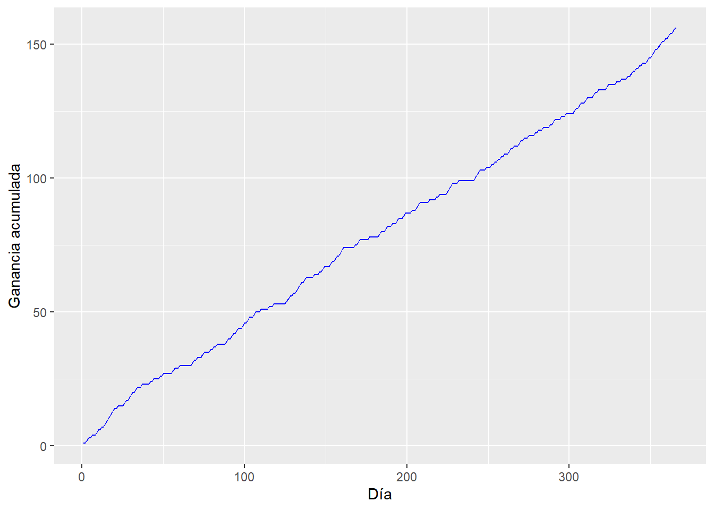
Se observa que las distribuciones a posteriori de las probabilidades de éxito de cada máquina se van centrando en el verdadero valor del parámetro a medida que aumenta la cantidad de días jugados. Esto es una situación que se repetirá en todas las estrategias, por lo cual solo se presentará el gráfico de las distribuciones a posteriori finales de aquí en adelante.
En el gráfico de barras se observa que se jugó de manera parecida con las tres máquinas esto se debe a que la elección de las mismas se realiza de manera aleatoria, sin tener en cuenta lo ocurrido anteriormente. Puede observarse que la máquina 2 es la que proporciona un mayor cantidad de éxitos, mientras que la 1 parece ser la peor. Luego de un año de simulaciones, se obtuvo una ganancia de 159 unidades monetarias.
El mismo procedimiento realizado para un año se repite por un período de 1000 años. A continuación se presentan los resultados.

[1] "La ganancia media por año es 159.33 unidades monetarias"A traves de la simulación de los 1000 años, se observa la distribución de las ganancias, la cual presenta un comportamiente simétrico centrado en aproximadamente 160 unidades monetarias por año.
Por último se concluye que esta estrategia no podría considerarse bayesiana, ya que siempre elige la máquina a utilizar de manera aleatoria, sin tener en cuenta la información recolectada.
Estrategia 2: Greedy con tasa observada
En esta estrategia se elige la máquina que tenga la mayor tasa de éxito observada hasta el momento. Esta tasa para cada máquina la calculamos como cantidad de días ganados sobre días jugados. Partiendo de una creencia inicial de que las tasas de éxito para las tres máquinas son iguales a 0.5. Con esta técnia se corre el riesgo de perder la primera vez que se juega con una máquina, su tasa se actualice a cero y no volver a utilizarla. Para omitir estos casos realizamos 10 tiradas de calentamiento previamente.
Se presenta la función que replica esta estrategia para un día. A esta se le envia una lista con los parámetros necesarios. La función elige de manera aleatoria la máquina a utilizar si el día simulado se encuentra entre los primeros 10, en los restantes elige la que presenta mayor tasa de éxito, simula la jugada y luego nos devuelve los valores actualizados de los parámetros.
greedy_tasa_obs<-function(lista2){
fl_calentamiento <- lista2[[5]]
t <- lista2[[2]]
tethas <- lista2[[1]]
if (fl_calentamiento){
sample <- sample(1:3, 1)
}
else{
sample <- order(t + runif(3,0.001, 0.009), decreasing = TRUE)[1]
}
juego <- rbinom(1, 1, tethas[sample])
lista2_salida<-list(tethas, t, juego, sample, fl_calentamineto)
return(lista2_salida)
}Aplicando este procedimiento para simular cada día jugado del año obtenemos:
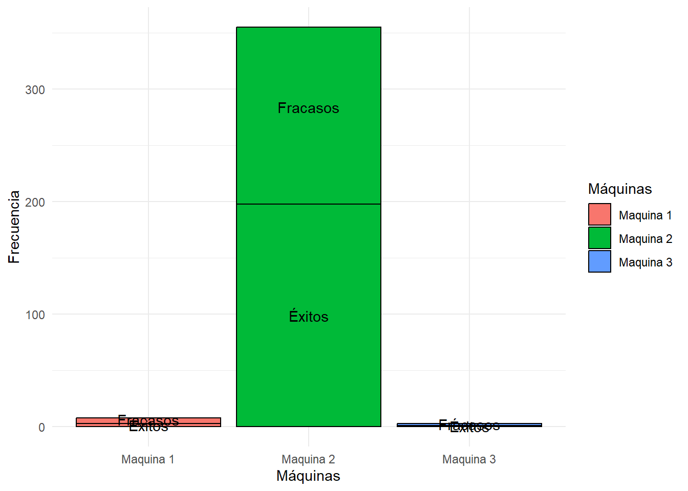

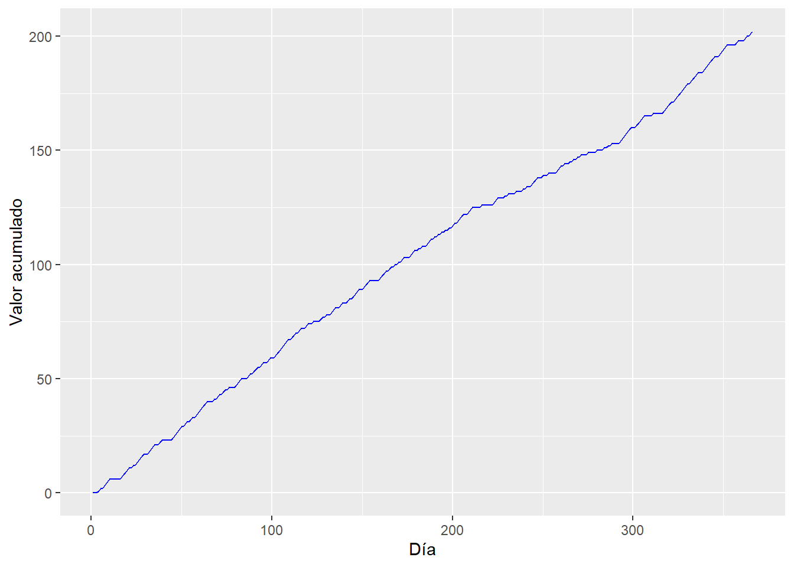
[1] "La ganancia de este año es 202 unidades monetarias"Se observa que este método en el año simulado elige mayormente la máquina 2, esto se debe a que presentó una mayor tasa de éxitos y se mantuvo constante durante este tiempo. En el gráfico de las distribuciones a posteriori se ve que la más modificada es la correspondiente a la máquina dos, debido a que ésta fue la más utilizada. Además se nota que se concentra alrededor del verdadero valor poblacional (\(\theta_2 = 0.55\)). Se presenta un tercer gráfico con la evolución de las ganancias acumuladas durante el año.
Luego se repite este procedimiento para simular 1000 años jugados con esta estrategia y se analizan los resultados.

[1] "La ganancia media por año es 185.585 unidades monetarias"Se grafica la distribución aproximada de la ganancia anual. En este se diferencian tres modas, estas corresponden a la cantidad de años en los cuales se usaron mayormente las máquinas uno, tres y dos respectivamente. La media de las ganancias anuales es 185.8 unidades monetarias. Además se puede notar que mayormente se obtuvieron ganancias altas, por lo que suponemos que se utilizó en mayor medida la máquina dos.
El método utilizado para la elección de la máquina no es bayesiano, ya que, no se utiliza información de la distribución a posteriori, solo se tiene en cuenta el valor de las tasas de éxito observadas hasta el momento.
Estrategia 3: Greedy con probabilidad a posteriori
En esta estrategia se elige la máquina que tenga, hasta el momento, mayor probabilidad de éxito promedio a posteriori.
Se presenta la función que simula esta estrategia para un día.Para esto se calculan las esperanzas de las tres distribuciones a priori y se utiliza la máquina que presenta el mayor valor. Luego se simula el juego con la máquina elegida y se actualizan las distribuciones.
greedy_prob_posterior<-function(lista3){
tethas <- lista3[[1]]
alphas <- lista3[[2]]
betas <- lista3[[3]]
esperanzas = c(alphas[1]/(alphas[1]+betas[1]),
alphas[2]/(alphas[2]+betas[2]),
alphas[3]/(alphas[3]+betas[3]))
#print(esperanzas)
sample <- order(esperanzas + runif(3,0.001, 0.009) , decreasing = TRUE)[1]
juego <- rbinom(1, 1, tethas[sample])
alphas[sample] <- alphas[sample] + juego
betas[sample] <- betas[sample] + 1 - juego
lista3_salida<-list(tethas, alphas, betas, juego, sample)
return(lista3_salida)
}Reiterando este método para simular las jugadas de un año se obtiene:
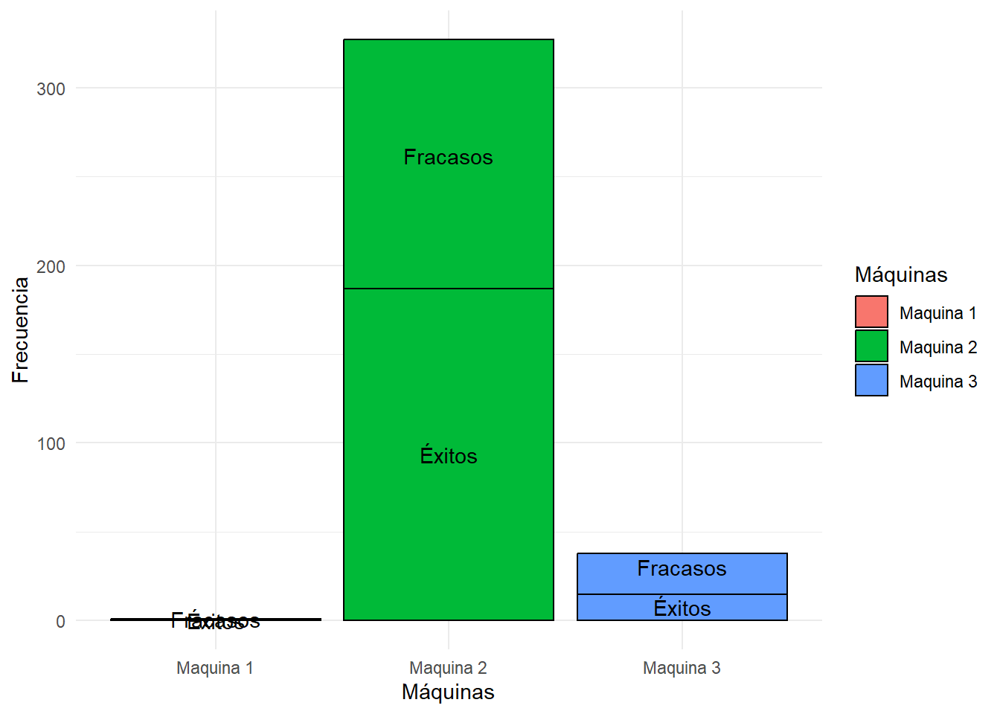
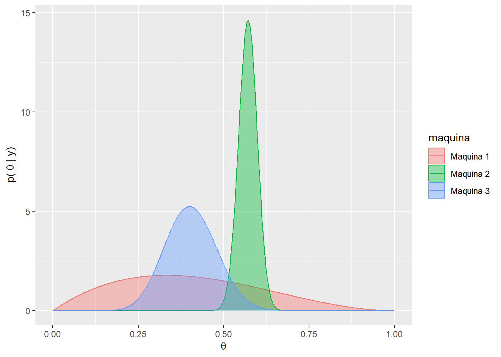
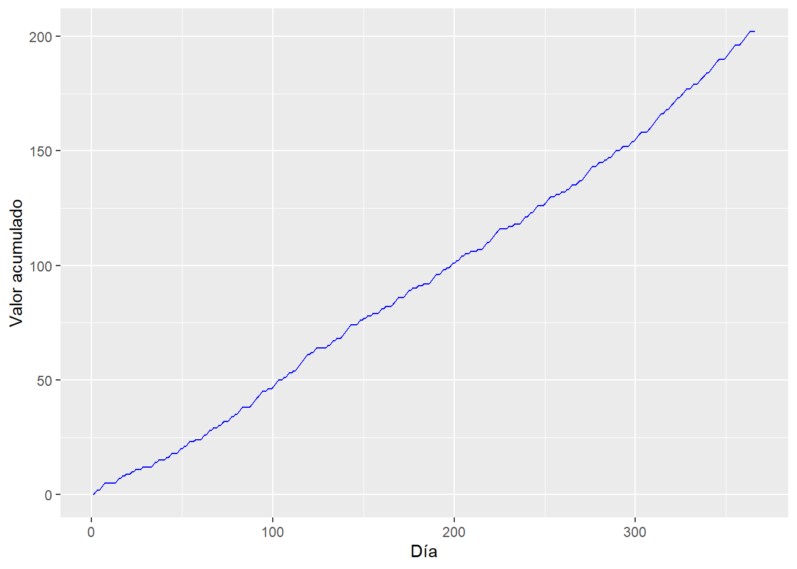
[1] "La ganancia de este año es 202 unidades monetarias"Se observa que la máquina más utilizada es la número dos presentando la mayor esperanza en su distribucion a posteriori. Viendo las distribuciones a posteriori se puede notar que los valores de la máquina dos está más concentrada alrededor de 0.55. Mientras que para las máquinas uno y tres la dispersión de los valores es mayor, esto se debe a que estas máquinas fueron las menos utilizadas. Con el último gráfico se observa la evolución de las ganancias a traves del paso de los días, obteniendo una ganancia total de 202 unidades monetarias.
Luego se repite este procedimiento para simular 1000 años jugados con esta estrategia y se analizan los resultados.
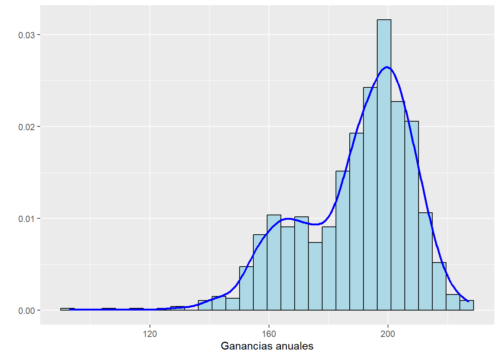
[1] "La ganancia media por año es 189.178 unidades monetarias"Luego de simular 1000 años, se grafican las ganancias anuales y se observa una distribución bimodal con modas aproximadamente en 160 y 190 unidades monetarias, correspondientes a las maquinas dos y tres respectivamente. La ganancia media para los 1000 años de simulación resulta igual a 189.17 unidades monetarias. El método es bayesiano ya que utiliza la máquina con probabilidad de éxito promedio más alta, es decir, la que presenta mayor esperanza en su distribución a posteriori y estas se actualizan en base a los resultados obtenidos tirada tras tirada
Estrategia 4: \(\epsilon\) -greedy (con tasa observada)
Se selecciona la mejor máquina (la de mayor tasa de éxito observada según los datos actuales) con una probabilidad de \(\epsilon\) y se elige una máquina al azar con una probabilidad \(1-\epsilon\). En este contexto, \(\epsilon\) es una constante que varía entre 0 y 1, y su valor determina la proporción de tiempo que el jugador dedicará a la exploración en comparación con la explotación.
Se presenta la función que simula esta estrategia para un día.
e_greedy_tasa_obs<-function(lista4){
e<-lista4[[3]]
explote<-runif(1)
lista4[[6]] = 0
lista4[[7]] = 0
if(explote<=1-e){#Elige el mejor
lista4[[7]] = 1 # exploto
sample <- order(t + runif(3,0.001, 0.009), decreasing = TRUE)[1]
}else{#Elige aleatoriamente
lista4[[6]] = 1 # exploro
sample <- as.numeric(sample(1:3, 1))
}
juego <- rbinom(1, 1, tethas[sample])
lista4_salida<-list(tethas, t, e, juego, sample, lista4[[6]], lista4[[7]])
return(lista4_salida)
}Se elige un \(\epsilon=0.05\), esto significa que el jugador gastará el 5% de su tiempo explorando nuevas máquinas y el 95% restante explotando la máquina que ha demostrado ser más rentable hasta ese momento. Reiterando este método para simular las jugadas de un año se obtiene:
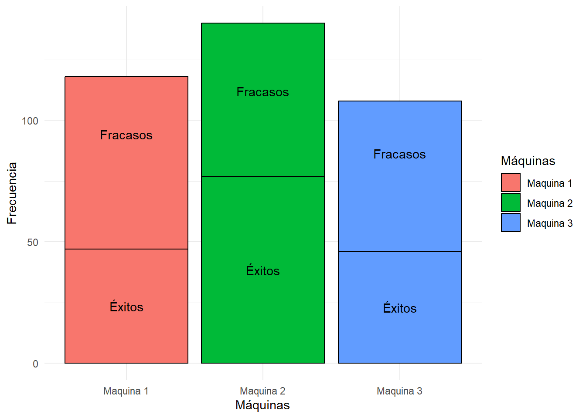
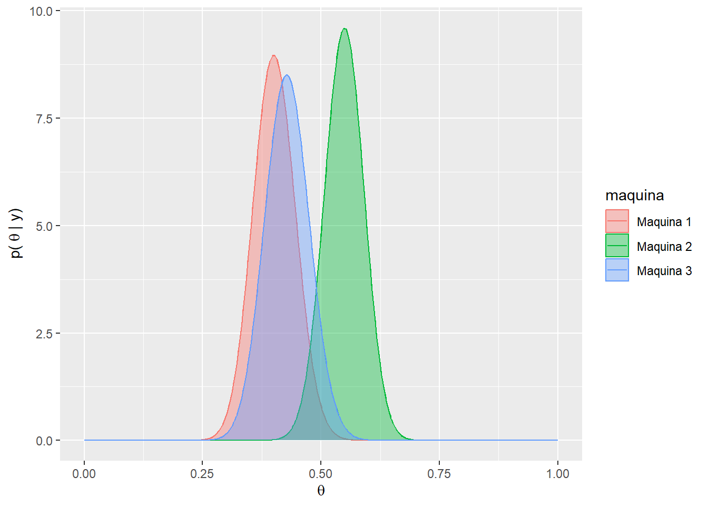

[1] "La ganancia de este año es 170 unidades monetarias"Se observa que se utilizan las 3 máquinas de manera similar,tambien se puede notar que las tiradas en la máquina 2 presentan una proporción de éxitos mayor en comparación a las 2 restantes. Viendo las distribuciones a posteriori se puede notar que al haberse realizado una cantidad de tiradas similiar en las 3 máquinas estas sus valores se encuentran concentrados alrededor del verdadero valor del parámetro (\(\theta_1\),\(\theta_2\),\(\theta_3\)). Con el último gráfico se observa la evolución de las ganancias a traves del paso de los días, obteniendo una ganancia total de 170 unidades monetarias.
Luego se repite este procedimiento para simular 1000 años jugados con esta estrategia, a su vez, se varía el tiempo de exploración elegido (\(\epsilon = (0.05, 0.1, 0.2)\) ) y se analizan los resultados.
[1] "La ganancia media por año utilizando e = 0.05 es 158.092 unidades monetarias"
[1] "La ganancia media por año utilizando e = 0.2 es 158.545 unidades monetarias"
[1] "La ganancia media por año utilizando e = 0.4 es 158.742 unidades monetarias"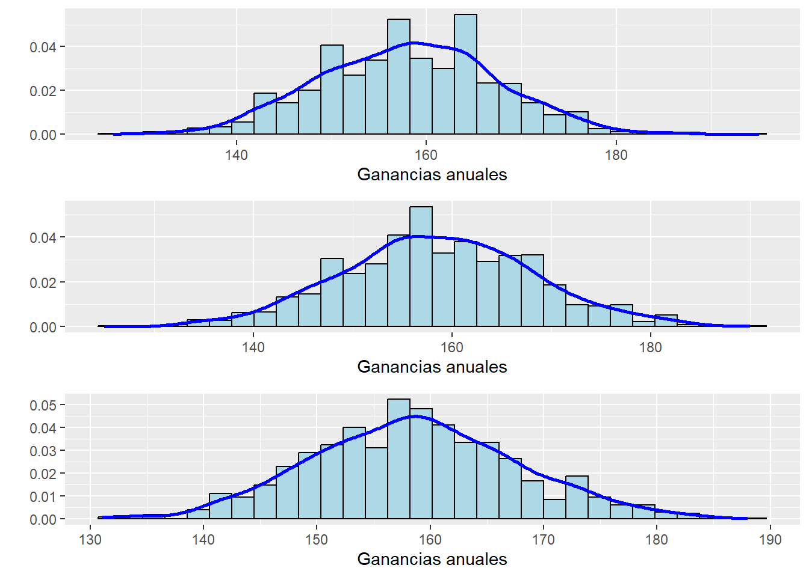
Luego de simular 1000 años, se grafican las ganancias anuales para los distintos valores de \(\epsilon\), a traves de los mismos vemos distribuciones parecidas, todas centradas en aproximadamente 160 unidades monetarias. La ganancia media para los 1000 años de simulación tomando \(\epsilon\) igual a 0.05, 0.2 y 0.4 resultan 158.84, 158.76 y 158.34 unidades monetarias respectivamente. El método no es bayesiano ya que utiliza la máquina con tasa de éxito mayor con probabilidad \(1-\epsilon\), y elige una máquina de manera aleatoria con probabilidad \(\epsilon\), sin tener en cuenta las distribuciones a posteriori de cada máquina.
Estrategia 5: Softmax
Dada la tasa observada para cada máquina i, \(\pi_i\) se calcula una probabilidad de elegir cada máquina utilizando la función softmax: \[Pr(i)=\frac{exp(\pi_i/\tau)}{\sum_{j=1}^{3}exp(\pi_i/\tau)}\] donde \(\tau\) es un parámetro de “temperatura” que controla el grado de exploración. Luego, se elige la máquina i con probabilidad \(Pr(i)\) . Se presenta la función “softmax” que para ciertos valores de las tasas (\(\pi_i\)) y el parámetro de temperatura (\(\tau\)), nos devuelve la probabilidad de utilizar cada una de las máquinas; y la función que replica esta estrategia para un día. A esta se le envia una lista con los parámetros necesarios. La función elige una máquina con probabilidad \(Pr(i)\) , simula la jugada y luego nos devuelve los valores actualizados de los parámetros.
# Función softmax
softmax= function(tau,pi){
pr_soft1 = exp(pi[1]/tau)/sum(exp(pi/tau))
pr_soft2 = exp(pi[2]/tau)/sum(exp(pi/tau))
pr_soft3 = exp(pi[3]/tau)/sum(exp(pi/tau))
pr_soft = c(pr_soft1,pr_soft2,pr_soft3)
return(pr_soft)
}
#Función para una tirada
tirada_softmax <- function(lista5){
alphas <- lista5[[1]]
betas <- lista5[[2]]
tethas <- lista5[[3]]
pi <- lista5[[4]]
tau=0.1
sample <- sample(1:3,1,prob=softmax(tau,pi))
juego <- rbinom(1, 1, tethas[sample])
alphas[sample] <- alphas[sample] + juego
betas[sample] <- betas[sample] + 1 - juego
lista5_salida<-list(alphas, betas, tethas,pi, juego, sample)
return(lista5_salida)
}Reiterando este método para simular las jugadas de un año se obtiene:

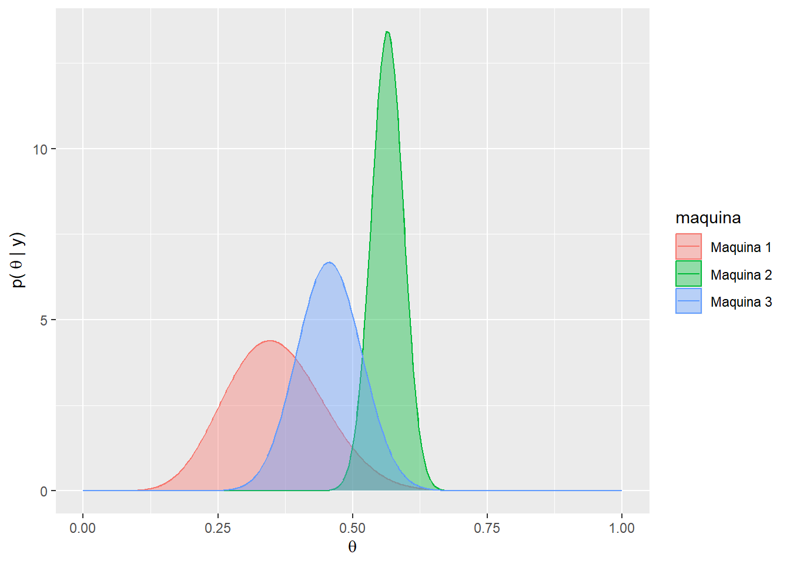

[1] "Las ganancias totales en ese año resultan 194 unidades monetaris"Se observa que en el año simulado se utilizaron mayormente las máquinas tres y dos, es decir, las máquinas que presentan una mayor probabilidad de éxito. Por este motivo, vemos que los gráficos a posteriori que más se modificaron en comparación al prior son los de estas 2 máquinas, dichas distribuciones parecen concentrarse en su verdadero valor poblacional a medida que se juega una mayor cantidad de veces. Mientras que el último gráfico evidencia la evolución diaria de las ganancias a lo largo del año, obteniendo una ganancia total igual a 194 unidades monetarias.
Luego se repite este procedimiento para simular 1000 años jugados con esta estrategia y se analizan los resultados.

[1] "La ganancia media por año es 185.069 unidades monetarias"A traves de la simulación de los 1000 años, se observa la distribución de las ganancias, la cual presenta un comportamiento levemente asimétrico por izquierda donde el 95% de los valores son mayores a 157 unidades monetarias. La ganancia media anual resulta igual a 185 unidades monetarias.
El método utilizado no es bayesiano, ya que, la elección de la máquina a utilizar se basa en una probabilidad que es función de las tasas observadas de éxito, las cuales no tienen en cuenta la distribuciones a posteriori correspondientes a cada máquina.
Estrategia 6: Upper-bound
En esta estrategia se selecciona la máquina que tenga el mayor extremo derecho de un intervalo de credibilidad (construido a partir de la distribución a posteriori de la probabilidad de éxito).
Se presenta la función que simula esta estrategia para un día. Para esto se calculan los intervalos de credibilidad para las 3 distribuciones y se utiliza la máquina que presenta el mayor valor en el extremo derecho. Luego se simula el juego con la máquina elegida y se actualizan las distribuciones.
upper_bound <- function(lista6){
tethas <- lista6[[1]]
alphas <- lista6[[2]]
betas <- lista6[[3]]
UCB <- c(qbeta(0.95, alphas[1], betas[1]),
qbeta(0.95, alphas[2], betas[2]),
qbeta(0.95, alphas[3], betas[3]))
sample <- order(UCB + runif(3, 0.001, 0.009), decreasing = TRUE)[1]
juego <- rbinom(1, 1, tethas[sample])
alphas[sample] <- alphas[sample] + juego
betas[sample] <- betas[sample] + 1 - juego
lista6_salida<-list(tethas, alphas, betas, UCB, juego, sample, cont_exitos, cont_tiradas)
return(lista6_salida)
}Reiterando este método para simular las jugadas de un año se obtiene:


[1] "La ganancia anual es igual a 206 unidades monetarias"Durante el año simulado se utilizó en mayor medida la máquina dos, la cual presenta una mayor probabilidad de éxito en una tirada. El gráfico a posteriori de las máquinas uno y tres se ven levemente modificadas, mientras que dicha distribución para la máquina dos presenta valores mucho más concentrados alrededor del verdadero valor del parámetro. Por último se registra la evolución diaria de las ganancias, obteniendo un total de 206 unidades monetarias.
Luego se repite este procedimiento para simular 1000 años jugados con esta estrategia y se analizan los resultados.

[1] "La ganancia media por año es 191.805 unidades monetarias"Mediante el gráfico de las ganancias anuales se observa una distribución unimodal, con una leve asimetría a la izquierda en los cuales la ganancia anual se encuentra entre 166 y 211 unidades monetarias un 90% de las veces. La ganancia anual mediana resulta igual a 193 unidades monetarias.
El método utilizado para la elección de la máquina es bayesiano, ya que, actualiza la probabilidad de elección para cada máquina a medida que realiza las jugadas. En este caso, la distribución a posteriori se verá modificada y del mismo modo se modificarán los extremos derechos del intervalo de credibilidad.
Estrategia 7: Thompson sampling
Para realizar la selección, este metodo toma una muestra de la distribución a posteriori de las probabilidades de éxito de cada máquina y se elige la máquina correspondiente a la muestra más grande.
Se presenta la función que simula esta estrategia para un día. Para esto se obtienen 3 muestras aleatorias provenientes de las 3 distribuciones y se utiliza la máquina que presenta el mayor valor. Luego se simula el juego con la máquina elegida y se actualizan las distribuciones.
thompson_sampling <- function(lista7){
alphas <- lista7[[1]]
betas <- lista7[[2]]
tethas <- lista7[[3]]
muestra<- c(rbeta(1,alphas[1],betas[1]),
rbeta(1,alphas[2],betas[2]),
rbeta(1,alphas[3],betas[3]))
#print(muestra)
sample <- order(muestra, decreasing = TRUE)[1]
juego <- rbinom(1, 1, tethas[sample])
alphas[sample] <- alphas[sample] + juego
betas[sample] <- betas[sample] + 1 - juego
lista7_salida<-list(alphas, betas, tethas, muestra, juego, sample)
return(lista7_salida)
}Reiterando este método para simular las jugadas de un año se obtiene:


[1] "Las ganancias totales en ese año resultan 166 unidades monetarias"Se observa que a lo largo del año se utilizó mayormente las máquinas dos y tres. Las distribuciones a posteriori de las probabilidades de éxitos para estas máquinas se encuentran más concentradas en los valores reales de los parámetros, mientras que la distribución de la máquina 1 no difiere tanto de la distribución a priori, esto se debe a que fue la máquina menos utilizada. El tercer gráfico presenta la evolución de las ganancias con el pasar de los días, se puede observar que la ganancia total resulta igual a 166 unidades monetarias.
Luego se repite este procedimiento para simular 1000 años jugados con esta estrategia y se analizan los resultados.

[1] "La ganancia media por año es 188.155 unidades monetarias"Se grafica la distribución aproximada de la ganancia anual. En este se diferencian un comportamiento simetrico centrado en aproximadamente 190 unidades monetarias. La media de las ganancias anuales es 188.52 unidades monetarias.
El método utilizado es bayesiano, ya que, actualiza las distribuciones a posteriori en cada tirada, por lo que la muestra elegida provendrá de una distribución distinta. De esta manera la elección de la máquina estará influida por los resultados de las tiradas anteriores
Conclusiones
Una vez simuladas todas las técnicas se procede a comparar los resultados obtenidos, y así poder recomendar a los futuros jugadores cuál de estas utilizar para maximizar las ganancias. Vale aclarar que se busca la estrategia que más se asemeje al caso ideal presentado al inicio del informe. Se presenta una tabla comparando algunas estadísticas
| Estrategia | Media | Desvio | Mediana | Quantil 95 |
|---|---|---|---|---|
| 0. Caso ideal | 200.64 | 9.59 | 201 | 216 |
| 1. Completamente al azar | 159.33 | 9.46 | 159 | 174 |
| 2. Greedy con tasa observada | 185.58 | 23.57 | 193 | 213 |
| 3. Greedy con probabilidad a posteriori | 189.18 | 18.81 | 193 | 213 |
| 4. e-Greedy | 158.74 | 9.21 | 159 | 174 |
| 5. Softmax | 185.07 | 15.83 | 187 | 208 |
| 6. Upper-bound | 191.80 | 13.56 | 193 | 212 |
| 7. Thompson Sampling | 188.16 | 11.92 | 189 | 206 |
Notoramiente las estrategias completamente al azar y \(\epsilon-\)Greedy presentan peores desempeños que el resto. Además, las medianas y cuantiles del resto de las estrategias se asemejan al caso ideal. Para tomar una decisión final, se acude a la comparación de distribuciones de ganancias anuales aproximadas que se presentaron a lo largo del informe.

Ahora si, visto y considerando que lo deseado es asemejarse al comportamiento distribucional de las ganancias anuales en el caso ideal, se podrían recomendar las estrategias upper-bound y thompson sampling como las más rentables.